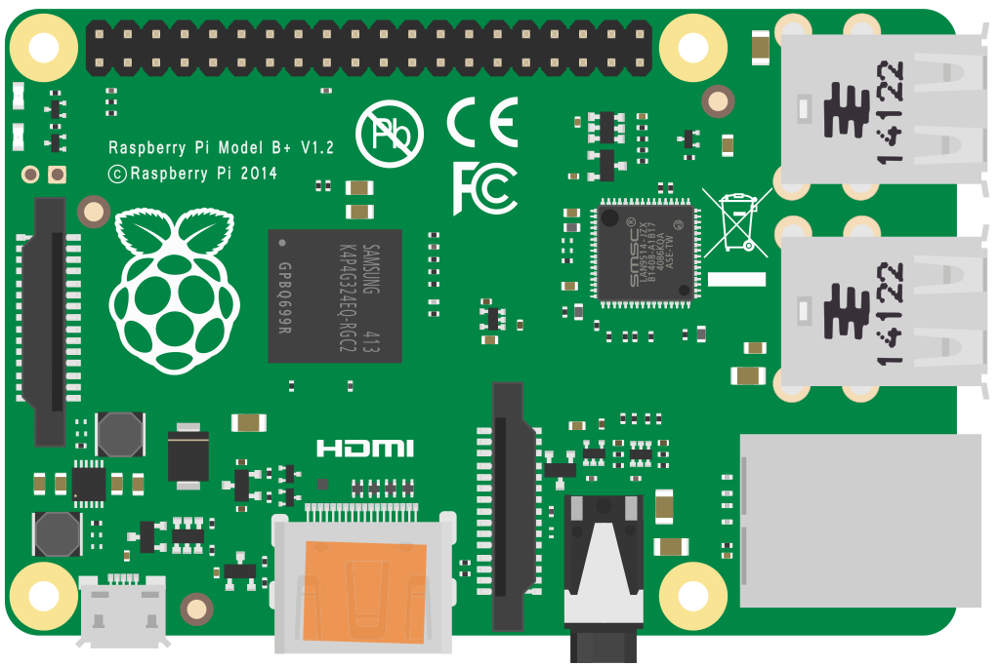

Welcome to my website!
PiBoard is your one stop shop for introductory raspberry pi projects ranging from getting setup to a minecraft server! Our goal is to teach anyone who wants to learn about the raspberry pi in a manner that is coherent and understandable to all! While this site servers the purpose of my IT 2040 final project, I intend to continue to update this site with the newest and latest raspberry pi projcts. All projects on this site are being done on a raspberry pi 4B using the DietPi operating system. As much of a learning experience as this is intended to be for those interested, its also a learning experience for me! Hopefylly, together we can all come together and learn about fun raspberry pi projects. Some topics on this site include:
- Setting up a raspberry pi running DietPi
- Creating a basic webserver
- Running a minecraft server
- Installing and running Docker
- And more to come!